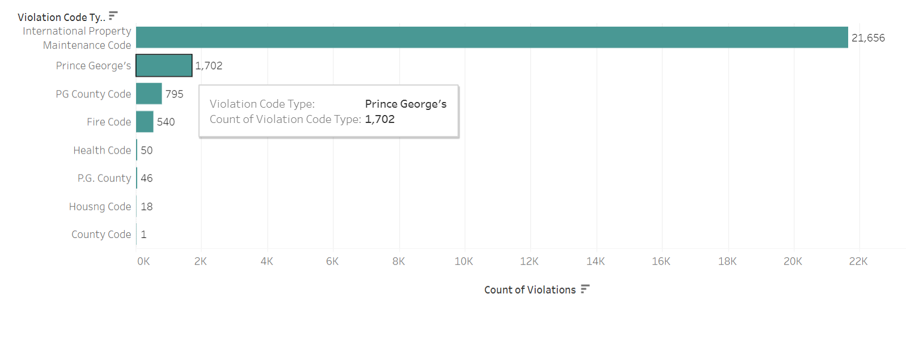
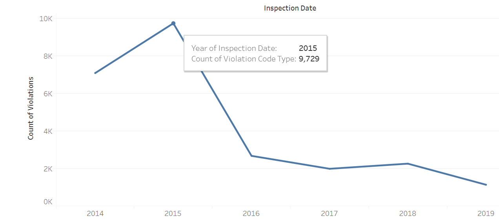
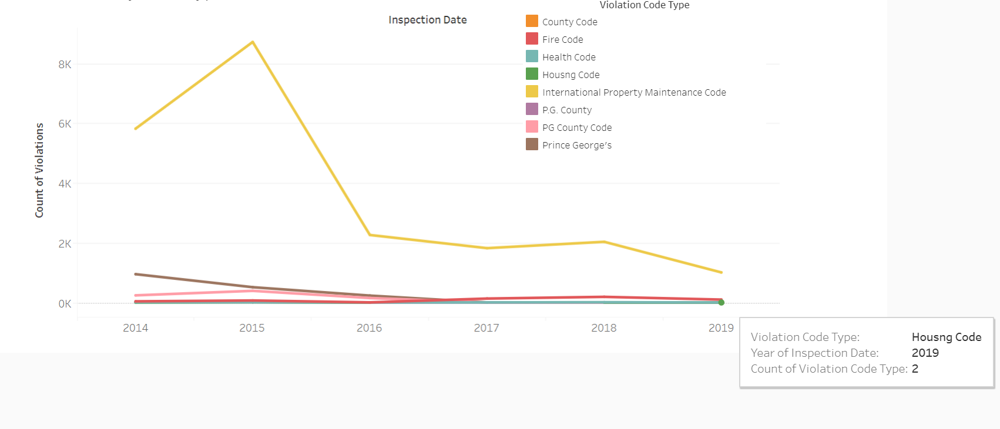

Utilizing Tableau,there is an interactive slideshow of four
visualizations.
Below are images on how to use the Tableau slideshow.
Hover over the different bars for more information.
Hover over different parts of the line for more information regarding each year.
Hover over different lines for more information for each line.
The data comes from the Housing Inspection Violations API provided by Prince Georges County under the Urban Planning section of the PG County open source data, link provided: https://data.princegeorgescountymd.gov/Urban-Planning/Housing-Inspection-Violations/ymzn-mdrc